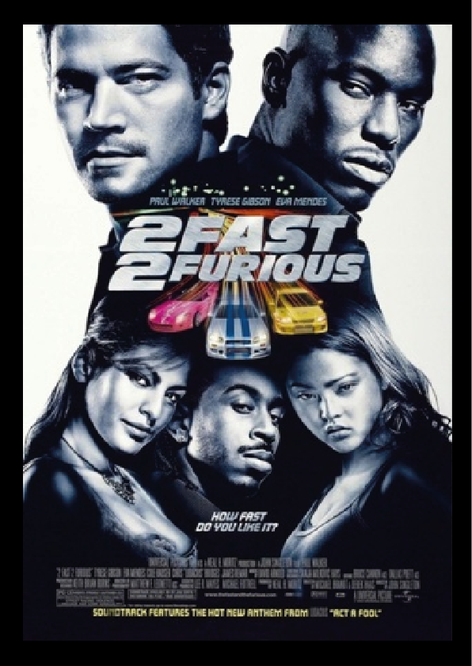
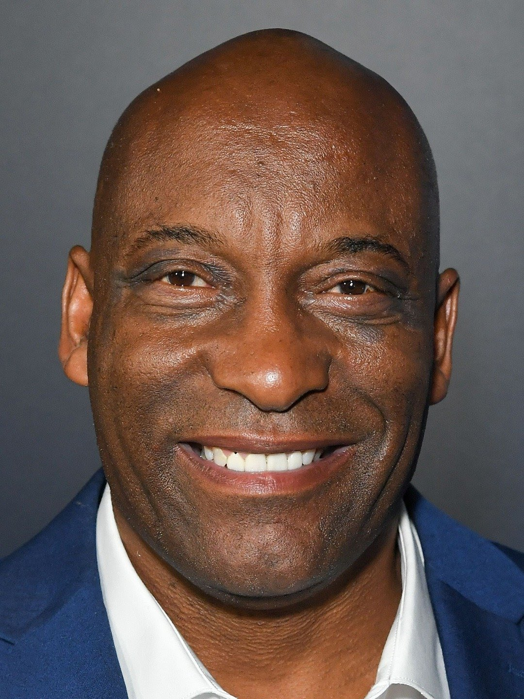
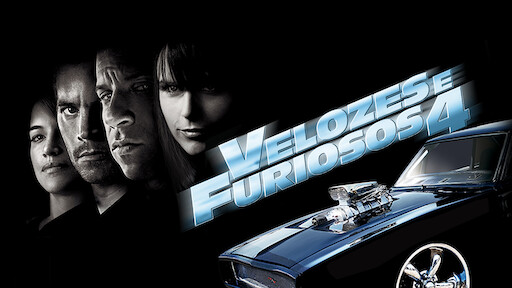
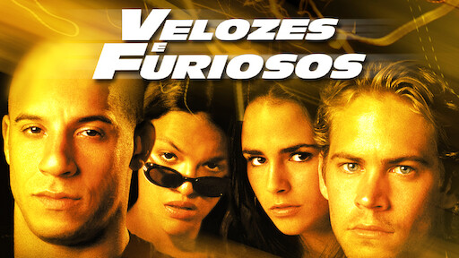

<DOCTYPE html>
	<html lang="pt-br">
	<head>
		<title>Velozes e Furiosos 2</title>
		<meta charset="utf-8">
		<link rel="stylesheet" type="text/css" href="css/estilo.css">	
	</head>
	<body>

		<ul class="trailer"> 
			<li> CineStream </li>
			<li id="li10"> Assista ao <a id="trailer" href="https://youtu.be/sWofeRh_53g?si=M9C69morp9UMsr0r"> trailer </a></li>
		</ul>

		

		<figure class="cartaz">
			
		</figure>
		<p> 1h 41min | 2003 | Ação </p>
		<h2> Preso em Miami, o ex-policial Brian O'Conner faz um acordo com o FBI <br> e se infiltra em um cartel como motorista. Para isso, ele pede ajuda a <br> um velho amigo. </h2>
		<br>
		<ul class="link"> 
			<li> Para saber mais </li>
			<li> <a href="elenco.html"> Acesse </a> </li> 
		</ul>
		<ul class="informacoes">
			<li id="li1"> Gêneros: <li id="li4"> Filmes de ação e aventura, Filmes policiais, <br> Filmes policiais de ação e aventura </li> </li>

			<li id="li2"> Idioma: <li id="li5"> German, English - Audio Description, <br> English [Original], French, Italian, <br> Portuguese (Brazil) </li> </li>

			<li id="li3"> Legendas: <li id="li6"> German, English, French, Italian, <br> Portuguese (Brazil) </li> </li>

			<li id="li7"> Diretor do filme: <li id="li8">  John Singleton </li> <li>  </li>

			<li id="li9"> Títulos semelhantes </li>
			
			
			
			

			<footer> Desenvolvido por João Pedro e Guilherme Peixoto. Trabalho de Front-end1 - IFMS Dourados</footer>
		</ul>
	</body>
	</html> 
</DOCTYPE>